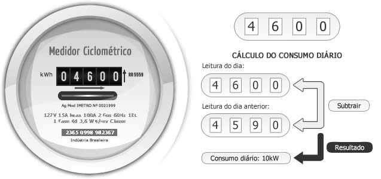

Quais os números pretos que estão aparecendo no seu medidor?

Tire ou envie uma foto do medidor com os números visíveis:
[Pré-visualização da imagem]Passo 1 de 2 - Número no hidrômetro
Quais os números pretos que estão aparecendo no seu medidor?

Tire ou envie uma foto do medidor com os números visíveis:
[Pré-visualização da imagem]